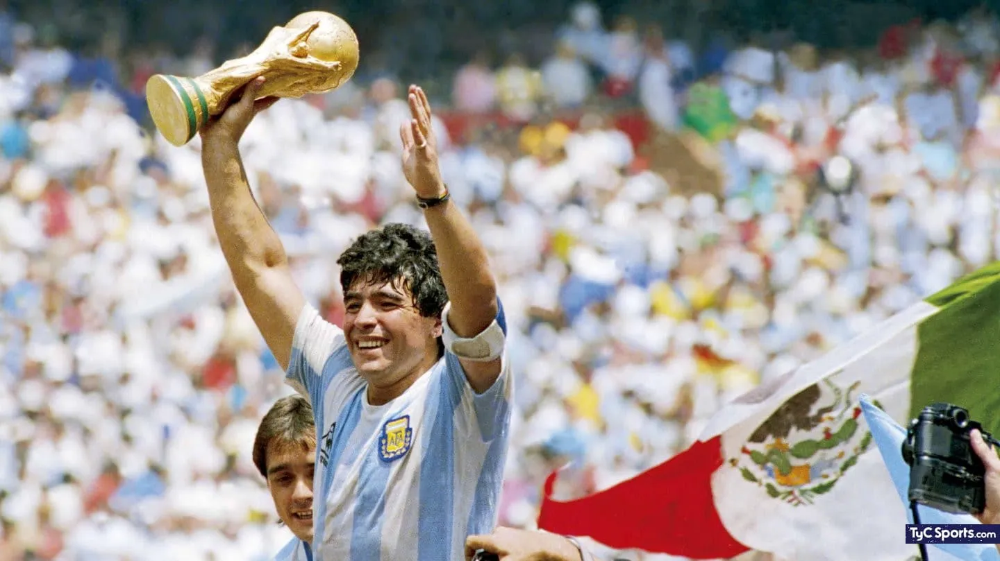

El Mundial de México 1986 quedó en la memoria por muchas razones: fue el primero, y hasta la fecha el último, que la Selección Argentina ganó fuera de casa; el que marcó la eliminación histórica a Inglaterra, el que catapultó a Diego Armando Maradona como el mejor del mundo, el del mejor gol del siglo, y donde se pudo superar en la final a Alemania, una potencia que luego se transformó en imbatible para la Albiceleste.
El 29 de junio de 1986, en el Azteca de Mexico, la Selección de Carlos Salvador Bilardo hacía historia. Ese día fue el final de un camino que había comenzado con dudas. Muchas críticas, en algunos casos con razón, acompañaron esa etapa del Narigón con la Selección. Pero el Mundial fue otra historia.
Allí comenzó a gestarse un equipo ganador, invencible, que contó con la presencia de un jugador que marcó la diferencia por sobre el resto, y que fue Diego Armando Maradona. Argentina formó parte del Grupo A, donde además estaban el campeón Italia, Bulgaria y Corea del Sur. El equipo de Bilardo arrancó con un triunfo por 3 a 1 ante Corea, la selección más débil de la zona. Ganó ese partido sin problemas, con dos goles de Jorge Valdano y otro de Oscar Ruggeri, mientras que el descuento coreano vino de parte de Park, a 17 minutos del final.
En el segundo turno llegó una dura prueba: Italia. Un partido para saber dónde estaba parada realmente la Selección. El equipo no defraudó. La Azzurra arrancó ganando 1 a 0 con un penal discutido que Altobelli convirtió en gol a los seis minutos de juego. Pero el equipo de Bilardo iba a recuperarse. Un gran gol de Maradona, quien desde una posición muy esquinada y con marca encima sacó un remate imposible que entró por el segundo palo de Galli, puso el 1 a 1 final.
En la última jornada del grupo, Bulgaria no opuso demasiada resistencia: el triunfo por 2 a 0, con goles de Valdano y Burruchaga, dejaron en claro que el equipo iba por buen camino. Las dudas de la difícil eliminatoria y de los amistosos previos al Mundial parecían quedar de lado. El equipo terminó primero en la zona. Pero el Mundial estaba comenzando.
Y llegaban los octavos de final, los partidos de mano a mano que no dejaban margen para el error. Una duda, una vacilación, un mal encuentro, significaba la despedida. Uruguay esperaba en esa instancia. Un equipo que no brillaba por su juego, pero se trataba de un clásico sudamericano y de dos equipos que se conocían bastante bien. No iba a ser sencillo. Y no lo fue. Argentina ganó por 1-0 con gol de Pedro Pablo Pasculli, a los 42 minutos del primer tiempo. La Albiceleste mereció el triunfo y fue más ante los de Enzo Francescoli, pero de todos modos el conjunto charrúa perdió por la mínima diferencia y acosó la valla argentina hasta el cierre del encuentro.
Sin embargo, el conjunto de Bilardo demostraba que en cada partido se consolidaba un poco más. Ya había una idea clara de juego, con un Maradona en un muy gran nivel, y jugadores que lo respaldaban como Burruchaga, Valdano, Batista, Giusti, Ruggeri, Brown, Enrique...
Decíamos que Maradona venía haciendo un gran Mundial, pero el partido que lo terminó marcando, a él y seguramente a todo el equipo, fue el de Inglaterra. Con la guerra de Malvinas aún muy presente (sólo habían pasado cuatro años) el choque tenía mucho de revancha. Para algunos, iba más allá del fútbol. Pero los jugadores y el cuerpo técnico se enfocaron en lo futbolístico. “Nosotros sabíamos que Inglaterra había matado a muchos argentinos, pero los jugadores ingleses no habían matado a nadie, no tenían nada que ver. No había que confundir las cosas”, reflexionaba años más tarde Maradona.
El 10 tuvo un partido brillante ante los ingleses, con dos goles memorables que lo marcaron para el resto de su carrera. El primero, con la mano, la famosa “Mano de Dios”; el segundo, el mejor gol de todos los tiempos: Maradona arrancó en su propio campo, dejó en el camino a Hoddle, Reid, Butcher, Fenwick y al arquero Shilton, y anotó el 2 a 0 memorable.
El uruguayo Víctor Hugo Morales inmortalizó con un relato cargado de emoción ese momento épico: “Ahí la tiene Maradona, lo marcan dos, pisa la pelota Maradona, arranca por la derecha el genio del fútbol mundial, deja al tercero y va a tocar para Burruchaga... ¡Siempre Maradona! ¡Genio! ¡Genio! ¡Genio! Ta-ta-ta-ta-ta-ta-ta-ta... Gooooool... Gooooool... ¡Quiero llorar! ¡Dios Santo, viva el fútbol! ¡Golaaazooo! ¡Diegoooool! ¡Maradona! Es para llorar, perdónenme... Maradona, en una corrida memorable, en la jugada de todos los tiempos... Barrilete cósmico... ¿De qué planeta viniste para dejar en el camino a tanto inglés? Para que el país sea un puño apretado gritando por Argentina… Argentina 2 - Inglaterra 0. Gracias Dios, por el fútbol, por Maradona, por estas lágrimas, por este Argentina 2 – Inglaterra 0”.
Sobre el final, Lineker marcó el 2 a 1 y le puso suspenso al partido. Pero la Argentina se terminó imponiendo con justicia y avanzó a la final para medirse contra Bélgica, equipo que llegaba tras eliminar a la España de Butragueño por penales.
Otra vez Maradona, quien ya estaba incontenible para los rivales, anotó los dos goles, dos nuevos golazos para poner a la Argentina en la final. El resultado fue 2 a 0, con tantos de Pelusa los seis y a los 18 minutos del segundo tiempo.
Esperaba Alemania. Los teutones, subcampeones de España 1982, habían quedado detrás de Dinamarca en la zona de grupos. Luego, derrotaron 1 a 0 a Marruecos, pasaron por penales a semifinales tras igualar sin goles ante México, y vencieron 2 a 0 a Francia, que era otra de las selecciones favoritas con Platini como figura.
La final comenzó con ventaja argentina. Primero José Luis Brown de cabeza (a los 23 minutos del primer tiempo), y luego Jorge Valdano, a los 10 minutos de la segunda mitad, pusieron a la Albiceleste 2 a 0 en el marcador. Parecía que todo se encaminaba hacia el título. Pero Alemania siempre es Alemania y nunca se da por vencida. Así, con goles de Rummenigge (29 del complemento) y Voller (35), a 10 minutos del final, empató 2 a 2.
Todo indicaba que se venía el tiempo suplementario. Pero Maradona, que no había tenido un gran partido y había sido bien marcado por los rivales, metió un gran pase gol para Burruchaga y a siete minutos del final, la Argentina volvió a estar arriba en el marcador: 3 a 2.
Así, se terminó un Mundial histórico, donde la Albiceleste arrancó de menor a mayor y fue creciendo partido a partido. La estadística indica que jugó siete partidos, ganó seis y empató uno, con 13 goles a favor y cinco en contra.
La Selección se terminó consolidando como equipo y como grupo, y tuvo a un Maradona en un nivel extraordinario para quedarse con la segunda Copa del Mundo de su historia.